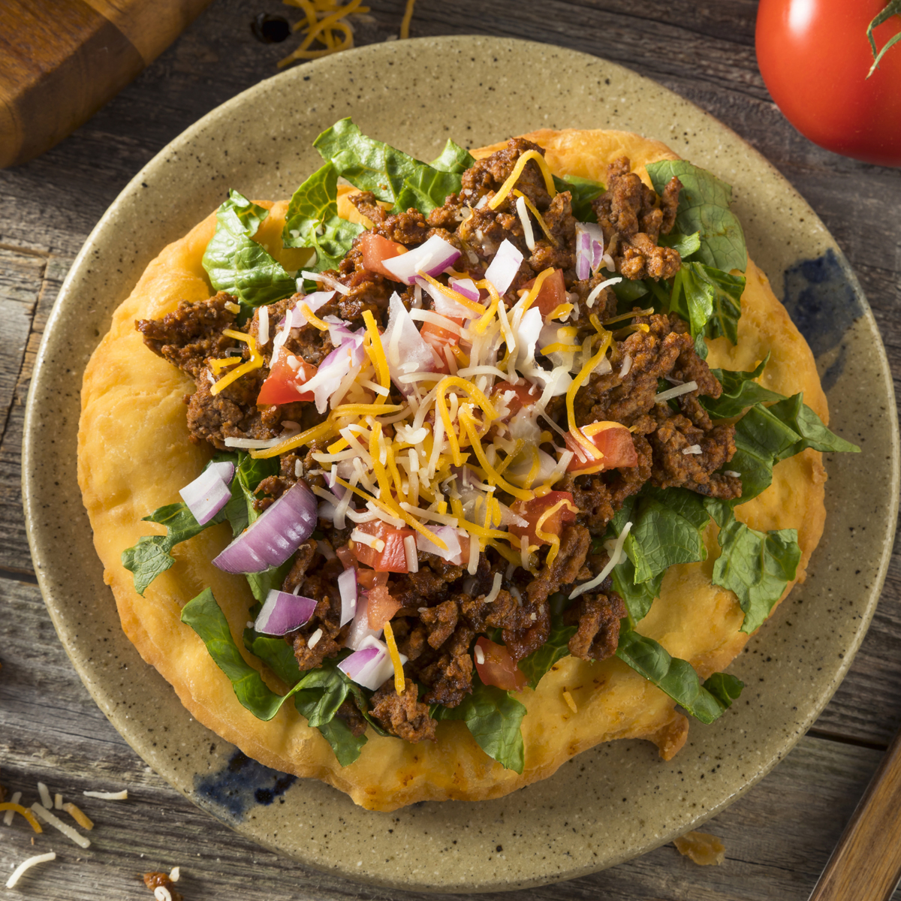

Favorite Fry Bread Tacos

What are they?
These fry bread tacos are a favorite at aboriginal pow wows all summer long. For easier eating, especially at picnics, cut cooked fry bread into crouton-sized pieces; divide onto individual plates before adding the remaining ingredients on top.
Ingredients
- 2 cups all-purpose flour
- 1 tablespoon baking powder
- ½ teaspoon white sugar
- ½ teaspoon salt
- 1 ½ cups lukewarm water
- 2 cups oil for frying, or as needed
- 1 pound ground beef
- 1 (15 ounce) can kidney beans, drained
- 1 (1.25 ounce) package chili seasoning mix
- 2 cups shredded Cheddar cheese
- 2 cups chopped iceberg lettuce
- 2 tomatoes, chopped
- 1 cup sour cream
Instructions
- Whisk together flour, baking powder, sugar, and salt in a large bowl; stir in water until a slightly sticky dough forms. Set aside to rest while oil preheats.
- Heat oil in a deep fryer or large saucepan to 375 degrees F (190 degrees C).
- Divide dough into 6 equal portions. Flatten each portion into a round disc the size of your palm.
- Fry dough discs, one at a time, in hot oil until bottoms are browned, about 2 minutes; flip with tongs and cook until browned on the other side, about 1 minute more. Drain fry bread on a paper towel-lined plate.
- Heat a skillet over medium heat. Cook and stir ground beef in the hot skillet until browned and crumbly, 5 to 7 minutes. Stir in kidney beans and chili seasoning; cook until heated through, about 5 minutes.
- Place each fry bread on a plate; top each with a portion of chili mixture, cheese, lettuce, tomatoes, and sour cream.